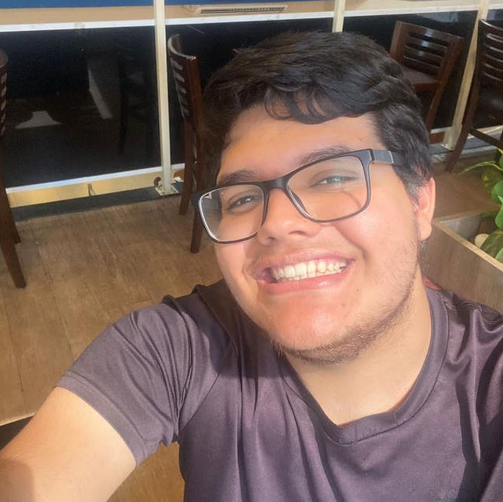

Info
Criadores
Arianny Oliveira Flavio
Quem canta seus males espanta!

Cristian dos Santos Machado
A música é a arte mais direta. Ele entra no ouvido, vai para o coração e manifesta-se na alma.
Isabelli Kevia da Silva
A música é a linguagem universal da humanidade!